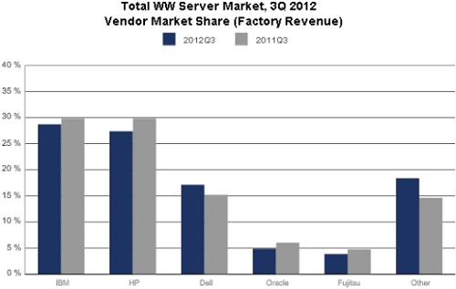

全球伺服器需求減少，Linux 伺服器不跌反升

◎本文原載 Linux Pilot，原文章連結按此。
美國市場研究機構 IDC 和 Gartner，最近公開了 2012 年第三季的全球伺服器銷售數字。兩家機構在數值上雖有分歧，但大方向卻十分一致。もある。在全球伺服器需求減少之時，Linux 伺服器銷售卻不跌反升。

根據 IDC 的調查，2012 年第三季，全球伺服器市場銷售額達 122 億美元，比 2011 年同期下跌 4.0%，Gartner 的調查結果則顯示比 2011 年同期下跌 2.8%。Gartner 的報告還顯示雖然銷售額減少了，但出貨量卻有 2.8% 的増加，反映伺服器銷售的利潤有所下降。
但報告結果也不完全是壞消息，IDC 的數據顯示，Linux 伺服器的出貨量有所增加，2012 年第三季的銷售額達 26 億美元，比 2011 年同期上升 6.6%。另一方面 Windows 和 UNIX 伺服器的銷售額均有減少傾向，Windows 伺服器銷售額 62 億美元，比 2011 年同期比減少 0.9%。UNIX 伺服器銷售額為 21 億美元，比 2011 年同期比減少 14.2%。
另一個業界傾向是 x86 伺服器市場的成長。IDC 和 Gartner 的數字均顯示，x86 伺服器銷售額有上升傾向，IDC 的數字顯示本季銷售額有 2.0% 上升，達 89 億美元，Gartner的數字顯示有 4.0% 的上升。至於 x86 架構以外的伺服器均錄得下降，IDC 表示採用 RISC、EPIC (Itanium Based) 和 CISC 的伺服器銷售額為 33 億美元，比 2011 年同期比減少 17.1%。 Gartner 的調查結果顯示，2012 年第三季的 RISC 和 Itanium 的 UNIX 伺服器銷售額為 33 億，比去年同期下跌 16.4%。非 x86 系伺服器的銷售額已經是連續 5 年下降，比率佔伺服器市場全體的 27%，是 IDC 自進行同一調查以來最低的數字。
至於各大廠商業績方面，IDC 和 Gartner 都表示在 2012 年第三季，市佔率最高的是 IBM，其次分別是 HP、Dell、Oracle 和富士通，當中只有 Dell 的佔有率比去年同期有所上升。